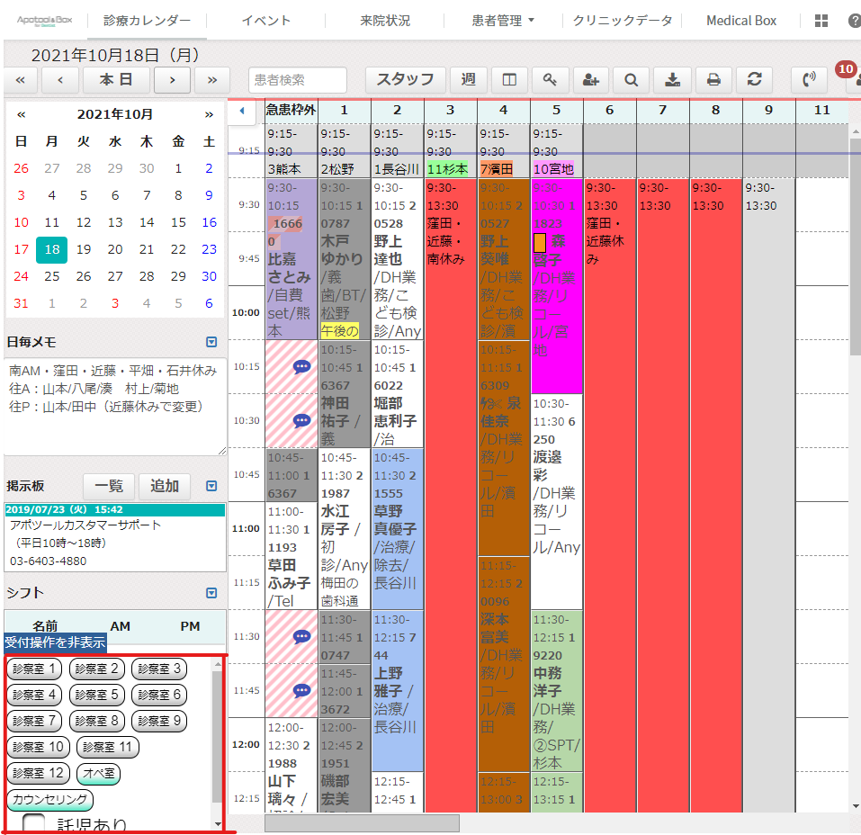
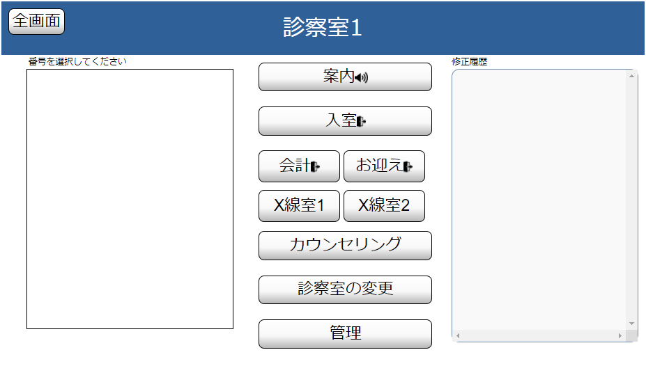
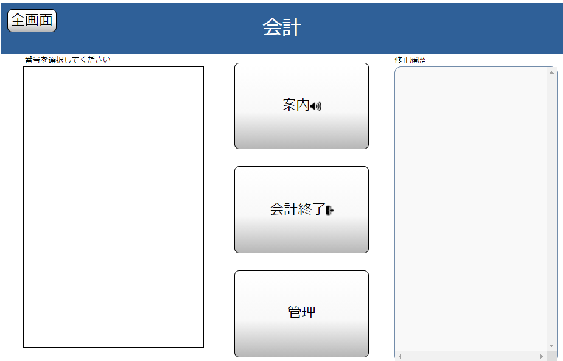
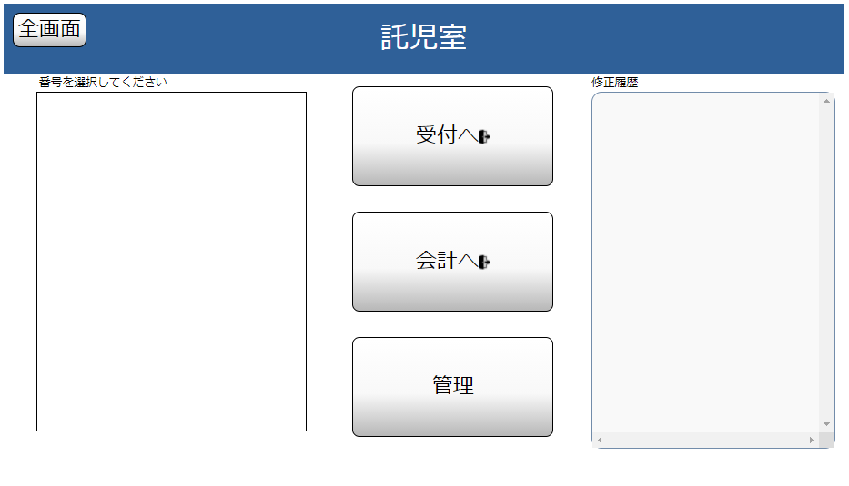
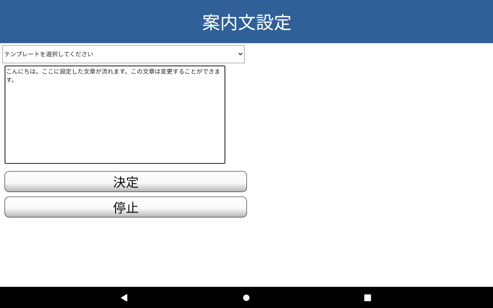
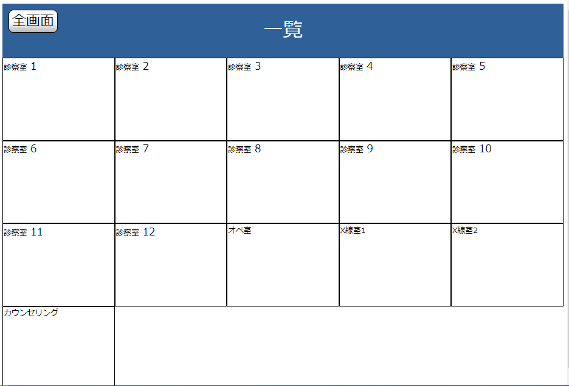
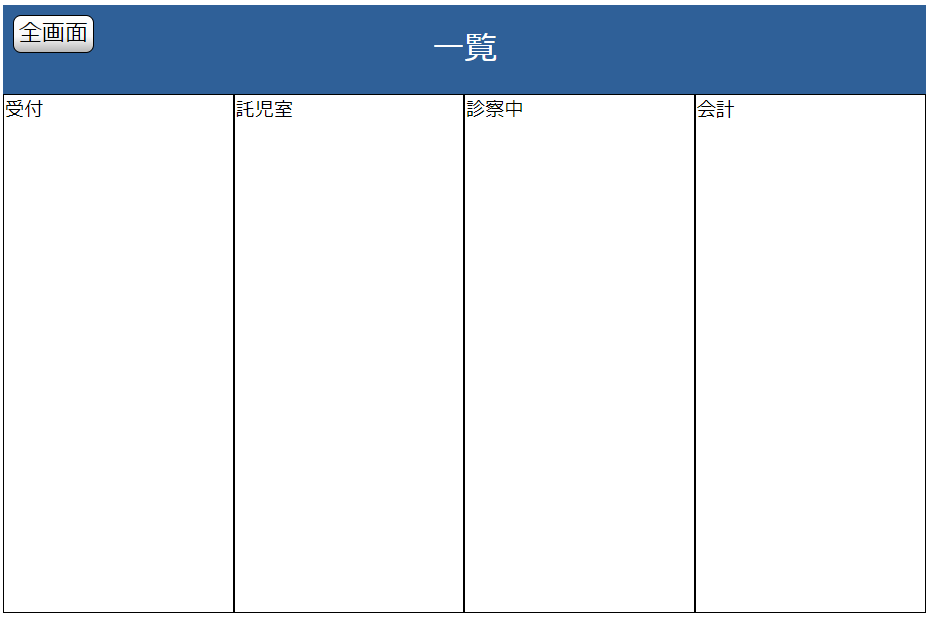

目次(各項目をタップするとその場所までスクロールします。）
それぞれの患者さんの診察室番号のボタンを押して来院を登録する
呼び出しボタンで音声案内→入室ボタン→退室ボタン
呼び出しボタンで音声案内→終了ボタン
左下のボックスに各診察室のボタンがあります。 各診察室のボタンを押すと受付番号とアポツールから取得した患者さんの名前が登録され、カードがプリントされます。 託児のある患者さんの場合はボタンの下のチェックボックスにチェックを入れてください。
左側にその診察室に割り当てられた患者さんのリストが表示されます。 案内ボタンと入室ボタンはこのリストを選択してから押してください。すでに一人入室している場合、ほかを入室させることはできません。 会計、お迎えボタンはすでに入室している人を退室させます。管理ボタンを押すと管理画面が開きます。
左側には会計を待っている患者さんのリストが表示されます。このリストを選択してから、案内ボタン・終了ボタンを押してください。管理ボタンを押すと管理画面が開きます。
左側には託児室に来る患者さんのリストが表示されます。リストを選択してから受付へ、会計へボタンを押してください。管理ボタンを押すと管理画面が開きます。
画面左半分ではそれぞれの患者さんの診察室や今の状態などを変更したり、呼び出しの取り消しをしたりできます。右半分では、変更履歴や全体のデータをすべて削除することができます。
一番上の「テンプレートを選択してください」からよく使う文章を選択して入力できます。真ん中の入力欄からテンプレートに追記したり、新しく書くこともできます。最大150文字まで入力することができます。 入力内容が決まったら、決定ボタンを押してください。待合室の呼び出しモニター下部にその文が流れて表示されます。
診察室ごとの一覧が表示されます。
状態ごとの一覧が表示されます。
